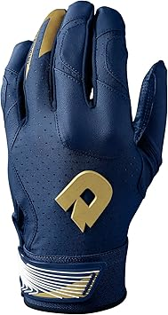
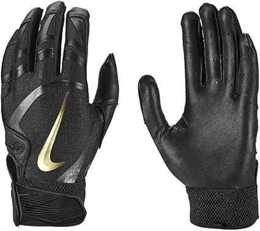

May 2026
Finding good scorpiongloves shouldn't require hours of research. Yet in 2026, the sheer number of options makes it harder than it should be.

⭐ 5.0 · $59.99

DeMarini Spectre Batting Gloves — Editor's pick
Nike Huarache Elite Batting Gloves — Editor's pickPanic buying on sale days — Prime Day and Black Friday scorpiongloves deals aren't always real discounts. Check year-round pricing.
Going with the cheapest option — Budget scorpiongloves cut corners. Spending 20% more often gets something that lasts 3x longer.
Waiting for the perfect deal — If you need scorpiongloves now, buy now. A 10% discount in 3 months costs you 3 months of use.
The scorpiongloves space keeps improving, and 2026 is a solid time to buy. See our full rankings at scorpiongloves.com for side-by-side comparisons.